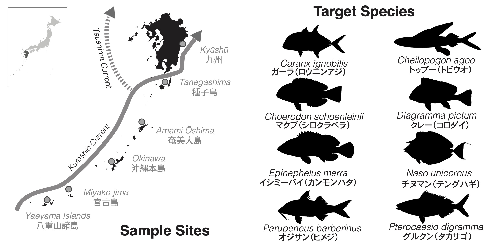

Population Genomics & Connectivity
An island on a map is a convenient place to collect fishes. Whether it corresponds to a genetic population is a question to test.
I use genomic data to investigate connections among islands and compare the histories of species found in the same region. My main project is based in the Ryukyus, with roots in earlier work on Caribbean silversides.

Following the Kuroshio Current
The Kuroshio Current carries warm water northward alongside the Ryukyu Archipelago, where many tropical fishes approach the northern limits of their distributions. That combination makes the region especially interesting for studying dispersal and establishment.
I want to know whether connections to southern biodiversity sources help explain the diversity of these communities. I am also interested in how continued exchange might contribute to replenishment after local losses. Typhoons, coastal modification, fishing, and the region’s history of warfare add important context to questions about persistence and recovery.
The genomic work can help identify connections and reconstruct population histories. Testing replenishment and resilience will also require ecological observations.
Comparing seven fishes
I designed a sampling program for seven reef fishes that differ in diet, water-column position, and social strategies. Sampling spans six locations:
- Tanegashima
- Amami Oshima
- Okinawa Honto
- Miyakojima
- Ishigaki
- Kumejima

Comparing species along the same island chain helps investigate which genetic patterns they share and which are associated with their different characteristics.
The work combines market sampling and targeted collecting with local fisheries cooperatives. Preserved specimens, tissues, and locality records keep each genetic sample connected to an identifiable fish and collecting event.
Project progress
The figures below reflect progress as of November 2026.
| Component | Current status |
|---|---|
| Specimens | More than 600 collected |
| Reference genomes | Seven completed |
| Low-coverage whole genomes | 490 sequenced |
| Population sampling | Targets reached for two species at five of six locations |
| Specimen models | Photogrammetry in progress |
Sampling continues, and coverage is still uneven among species and places. I am developing the morphological dataset alongside the genetic work so the same individuals can be compared in more than one way.
What we are finding
Testing island-based expectations
COI haplotype networks showed that Okinawa samples did not form an exclusive island-specific cluster. That observation prompted questions about shared ancestry, continuing exchange, and historical colonization.
Mitochondrial data alone cannot distinguish those explanations. Population-structure, gene-flow, and demographic analyses are underway using the genome-wide data.
Looking closely at species identities
COI and whole-genome differentiation supports two species among fishes currently identified as Parupeneus barberinus. This raises questions about the distributions and ecological associations represented within its nominal range.
A related project examines species boundaries and possible hybridization in Pterocaesio. These findings and questions make taxonomy an important part of interpreting the connectivity data.
Comparing diversity
Preliminary analyses suggest higher genetic diversity in the Okinawa samples than at other sampled locations. More balanced sampling is needed before interpreting that difference confidently.
An earlier island project
My early marine research focused on Atherinomorus stipes, the hardhead silverside, among islands in Belize and the Florida Keys.
In Nash et al. (2017), we found high mitochondrial haplotype diversity and distinct regional lineages, with no support for isolation by distance within the sampled island groups. That work helped shape my interest in how habitat associations and history influence genetic structure.
The Ryukyu project lets me revisit these questions across several species with much broader genomic data.
Future avenues
Comparisons with samples from Taiwan, the Philippines, and other potential source areas would help test the timing and direction of exchange. I also want to ask whether fishes with similar connections share ecological characteristics, and whether population histories line up with differences in body shape and habitat use.
Over time, pairing genetic analyses with recruitment monitoring could help evaluate whether connected populations show stronger replenishment following local declines.
Phylogenetics and biogeography →
Traits and communities →
Research overview →